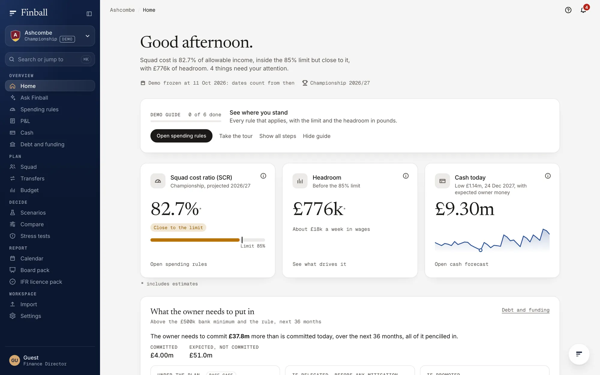
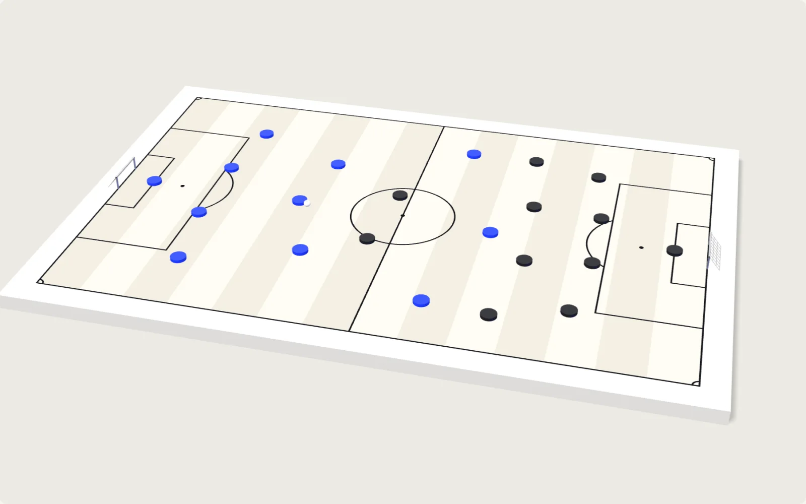
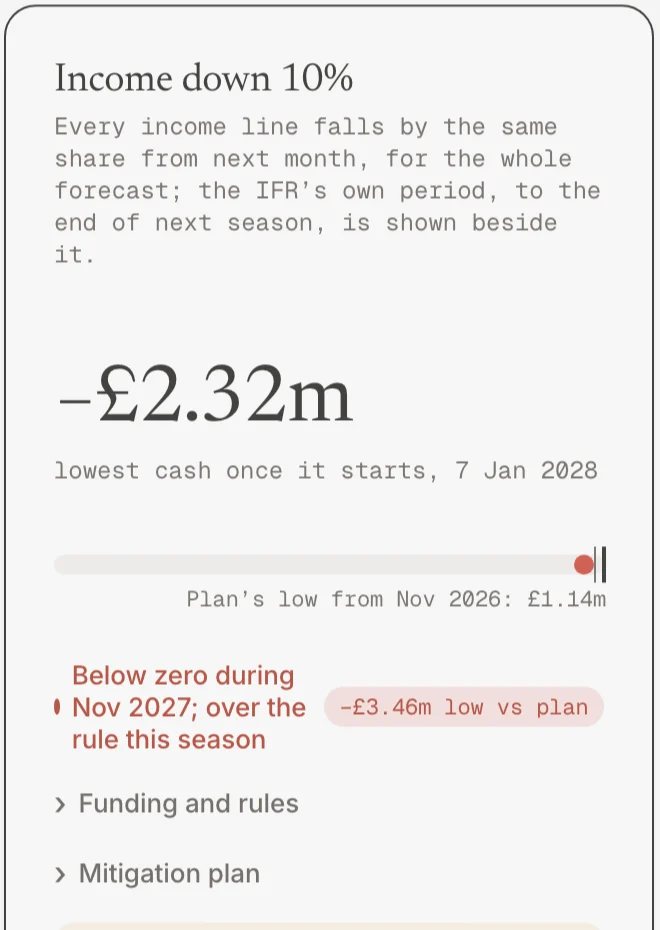
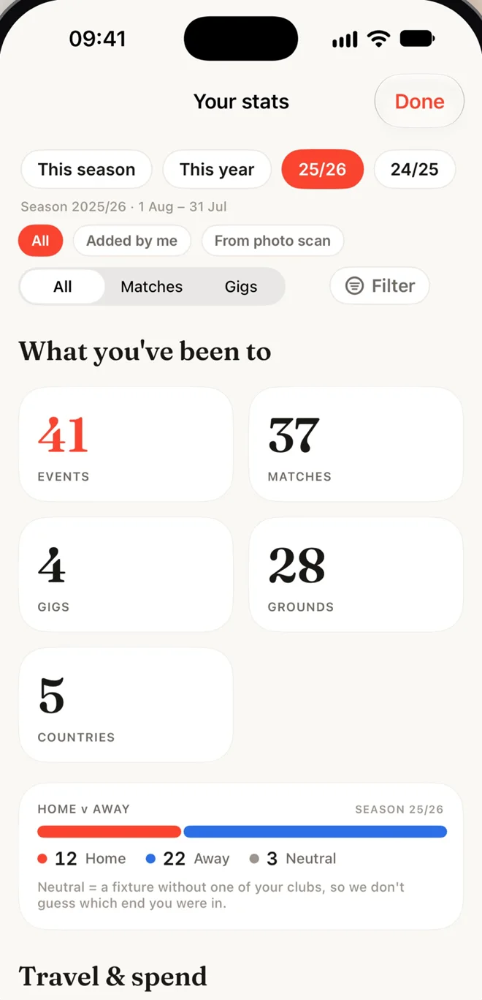
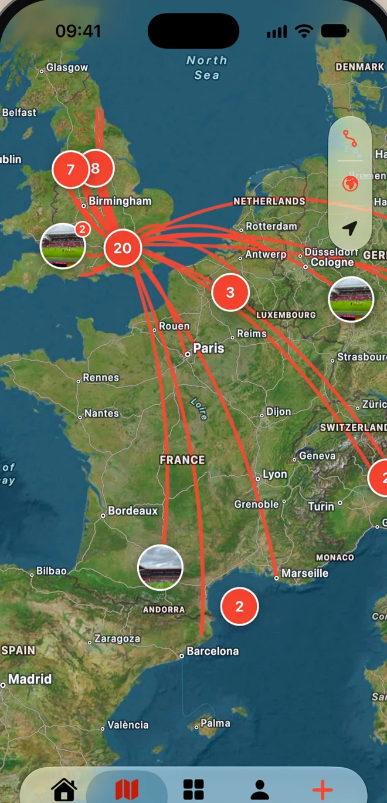
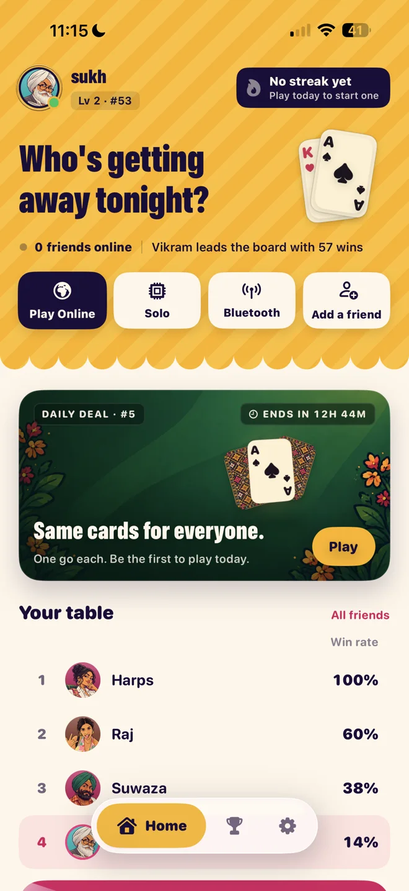
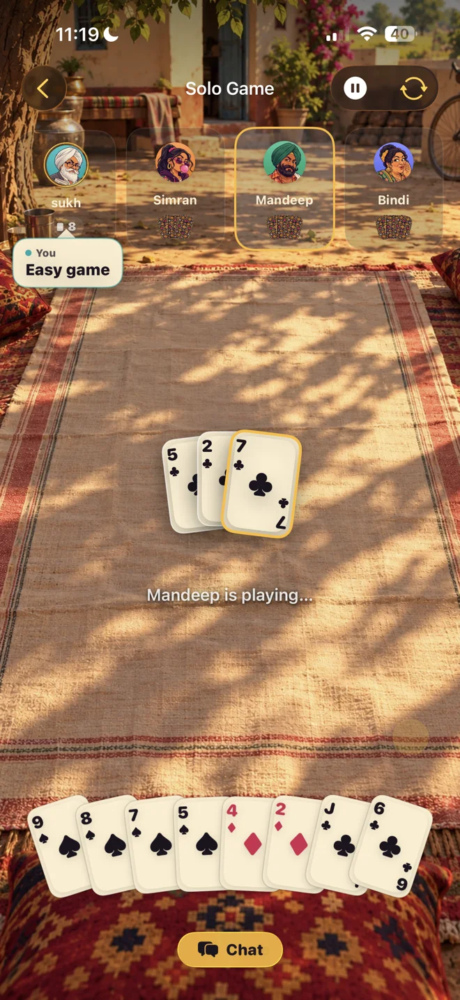

LL-0001 · Co-founder
Sukhpinder Ubhi
Works across the whole stack with Nikolaos: SwiftUI for the apps, TypeScript for Finball, PyTorch for Tracelob. Closest to product and brand, from the first sketch to the App Store listing.
Venture studioLondonEst. 2026
Lumira Labs is a venture studio in London. We design, build and run our own companies: iPhone apps, SaaS platforms and the machine-learning models behind them.
Drag a pass. Flick it off the page. Click one to meet a founder.
(00)
Everything the studio has built so far. All of it is ours: we don't take client work.
Every pound a football club earns, spends and owes, checked against the rules its league sets.
Finball models a club's finances for the next 36 months and tests them against Premier League, Championship and League One spending rules, and against the new regulator's stress tests. Change a wage or sign a player and the headroom moves before the decision is made. The rules run on exact fraction arithmetic, so a finance director sees the number the rule itself would give, to the penny.





A map of every football match and gig you've been to.
Daysout reads the dates and places in your camera roll and works out which matches and gigs you were at. The fixture, the score and the setlist fill themselves in, and friends who were there can share one album.
Version 1.0.3 shipped 6 Nov 2026 · iOS, Supabase
Download on the App Store

The card game Punjabi families grew up on, rebuilt for the phone.
Play friends online, or sit round one table and play over Bluetooth with no internet at all. There's a daily deal where everyone gets the same cards, and a season leaderboard to argue about.
Our own vision model for padel. It finds four players and one very small ball.
Tracelob watches a match from a fixed camera behind the glass and tracks every player and the ball, frame by frame. The detector is ours: we call it TraceNet, wrote it in PyTorch and trained it on an 8 GB MacBook, with no off-the-shelf model left on the tracking path. It's research for now.
Measured 6 Nov 2026 on two minutes of footage the model never trained on, from one hall, against labels from a larger teacher model and not human ones. The rally drawn here is simulated.
A food and recovery coach that reads Apple Health and gives you one clear picture of your day: sleep, training load, what you ate. On the App Store since September 2026.
App Store(06) Ship log
commits across our product repositories since July. Counted on 11 November 2026.
(07) In-house
Research, interface and brand for every product, from the first sketch to the App Store listing. Figma · motion · brand
SwiftUI apps with subscriptions, widgets and Bluetooth multiplayer, and Supabase behind them. Swift · SwiftUI · StoreKit
TypeScript and React on Cloudflare Workers. Finball runs its whole engine in the browser. TypeScript · React · Workers
Regulation written as versioned code, with exact arithmetic and a test for every worked example. Rational maths · golden tests
Detectors trained in-house, court homography and tracking through occlusion. PyTorch · TraceNet
(08) Founders
LL-0001 · Co-founder
Works across the whole stack with Nikolaos: SwiftUI for the apps, TypeScript for Finball, PyTorch for Tracelob. Closest to product and brand, from the first sketch to the App Store listing.
LL-0002 · Co-founder
Works across the whole stack with Sukhpinder: iOS, Cloudflare Workers, Supabase and the training pipeline behind TraceNet. Closest to architecture and infrastructure.
Both are degree apprentices at J.P. Morgan, a programme that takes around the top 1% of applicants. They started Lumira Labs in April 2026.
team@lumiralabs.co.uk(09)
Investors and partners: write to us, or book fifteen minutes with the founders.